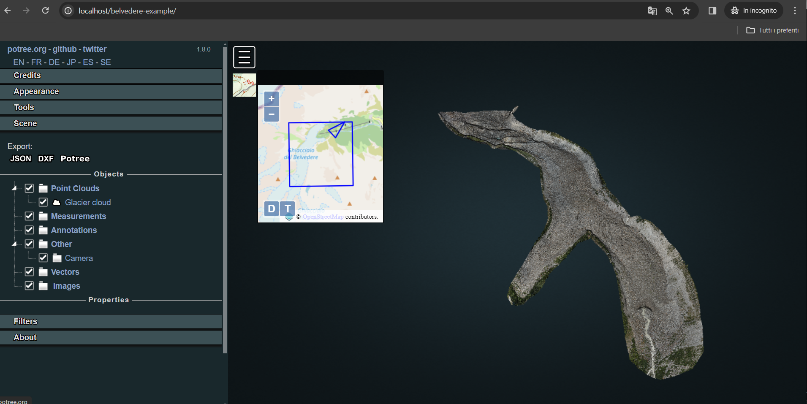

3D Viewer implementation
In order to start designing the web page that is going to host the Potree-based viewer, start creating a new folder within C:\xampp\htdocs. Name it according to the name you want to associate to the url. For example, if you'll name it belvedere-example, when you'll access the test web page you will have to search for localhost/belvedere-example on the browser.
The folder you have just created will contain all the files and assets needed to enable the Potree viewer. In particular:
-
index.html: this file with HTML extension will be the homepage of the 3D web viewer, containing the basic settings for the GUI and including the paths to additional external files for style (css) and/or functionalities (js).
-
libs folder: it contains many subfolders for all libraries' dependencies for making functionable the viewer.
-
licenses folder: it includes license specifications for the libraries used in the development.
-
css folder: it contains file(s) that define the style and appearance of the web page.
-
js folder: this includes all the scripting JavaScript files that enable native and/or custom functionalities and actions on the web page.
-
pointclouds folder: inside this space converted pointclouds are saved with their ancillary files.
-
img_selected folder: it containes oriented images that the viewer developer is willing to integrate on the platform. Together with the picture files, camera certificates and images orientation parameters are saved in this folder.
Defining index.html
The index.html file includes the main settings for the web page that contains the custom Potree viewer. At the top of the file, the doctype declaration for HTML file is included as follows:
<!DOCTYPE html>
Hence, the root of the page is initialised with the html tag, that includes the other main tag of an html page - head and body - as well as the indication to the browser on how to interprete the language of the text in the page.
<html lang="en">
<head>
...
</head>
<body>
...
</body>
</html>
The head tag houses the metadata of your website. For example, information contained in this part defines the title that will appear on the browser window when the page is loaded as well as other important metadata regarding the content and/or the author(s) of the page. Connection to stylesheets (.css files) are also inserted here. Most of the information inserted will remain invisible to normal visitors of the page but represent relevant information for browsers and search engines.
These settings need to be defined in the first lines in the head element as follows:
<head>
<!-- Specifying the character encoding for the document -->
<meta charset="utf-8">
<!-- Providing a shrt description for the page content -->
<meta name="description" content="Simple Potree viewer">
<!-- Specifying the author of the document -->
<meta name="author" content="Your name here">
<!-- Declaring needed information for website responsivity -->
<meta name="viewport" content="width=device-width, initial-scale=1.0, user-scalable=no">
<!-- Setting the title of the page -->
<title>Belvedere glacier</title>
<!--Linking the needed stylesheet of the libraries adopted in the rest of the code-->
<link rel="stylesheet" type="text/css" href="./libs/potree/potree.css">
<link rel="stylesheet" type="text/css" href="./libs/jquery-ui/jquery-ui.min.css">
<link rel="stylesheet" type="text/css" href="./libs/openlayers3/ol.css">
<link rel="stylesheet" type="text/css" href="./libs/spectrum/spectrum.css">
<link rel="stylesheet" type="text/css" href="./libs/jstree/themes/mixed/style.css">
<!-- Custom styles for this template -->
<link rel="stylesheet" type="text/css" href="./css/style.css">
</head>
Instead, the body section includes all the elements that represents the core content of the page, for example headings, texts, multimedia, links etc. It also containes the references to scripting .js and dependencies libraries.
<body>
<!-- JS Dependencies for Potree -->
<script src="./libs/jquery/jquery-3.1.1.min.js"></script>
<script src="./libs/spectrum/spectrum.js"></script>
<script src="./libs/jquery-ui/jquery-ui.min.js"></script>
<script src="./libs/other/BinaryHeap.js"></script>
<script src="./libs/tween/tween.min.js"></script>
<script src="./libs/d3/d3.js"></script>
<script src="./libs/proj4/proj4.js"></script>
<script src="./libs/openlayers3/ol.js"></script>
<script src="./libs/i18next/i18next.js"></script>
<script src="./libs/jstree/jstree.js"></script>
<script src="./libs/potree/potree.js"></script>
<script src="./libs/plasio/js/laslaz.js"></script>
<!-- INCLUDE ADDITIONAL DEPENDENCIES HERE -->
</body>
With the given settings, the index page its initialised and ready to be modified in order to insert custom elements for the potree Viewer.
Initialising Potree viewer
In order to set up the basic Potree environment a first div element needs to be inserted in the body section.
<body>
...
<!--Loading settings for Potree viewer-->
<div class="potree_container" style="position: relative; height:100%; width: 100%;">
<div id="potree_render_area">
</div>
<div id="potree_sidebar_container" style="width: 50%; height: 100%;"> </div>
</div>
...
</body>
The div "potree_container" class element set up the position of the overall Potree container in the web page. Hence, the div element with the id "potree_render_area" is nested in the div container. It is a placeholder for the actual rendering area where the point cloud data will be visualized. Eventually, the div element which has the id "potree_sidebar_container" is a container for a sidebar thatcontains additional controls and tools related to the Potree viewer.
Loading and visualising point clouds
Also, make sure you have the point cloud of the glacier in .las format. Once this product is obtained, you could convert the .las cloud using one of the method described previously. At the end of the procedure you will obtain a folder with the following structure:
converted_pointcloud_folder
|
│ hierarchy.bin
│ metadata.json
| octree.bin
Copy the whole folder and paste it inside the pointclouds folder. In order to include pointcloud(s) in the viewer, create a new .js file in the js folder and name it pointcloud.js. It will include all the detailed information for loading pointcloud properly in Potree. Then, open the pointcloud.js file with a text editor. Let's start by inserting:
/* Loading Potree viewer in the Potree Render Area defined in index.html */
window.viewer = new Potree.Viewer(document.getElementById("potree_render_area"));
This line will assign to the global variable viewer a new instance of the Potree viewer that is contained in the div of class potree_render_area in the index.html file.
Then, the default settings for the viewer are defined:
...
/* Defining appearance settings for rendering in the viewer */
viewer.setEDLEnabled(true); // Enabling Eye-Dome-Lighting option
viewer.setFOV(60); // Defining Field of view
viewer.setPointBudget(2_000_000); // Defining point budget
viewer.setDescription("Explore the oriented images of the model on a desktop browser."); // Setting a description to be shown on top of viewer
The sidebar structure is then defined as follows:
/* Loading the settings for the Potree sidebar */
viewer.loadGUI(() => {
viewer.setLanguage('en');
viewer.toggleSidebar();
$("#menu_appearance").next().show();
$("#menu_tools").next().show();
/* Creating a new sidebar section for credits */
let section = $(`<h3 id="menu_meta" class="accordion-header ui-widget"><span>Credits</span></h3><div class="accordion-content ui-widget pv-menu-list"></div>`);
let content = section.last();
content.html(`
<div class="pv-menu-list">
<li>INSERT TEXT HERE</li>
</div>
`);
content.hide();
section.first().click(() => content.slideToggle());
section.insertBefore($('#menu_appearance'));
});
Finally, the pointcloud is loaded by first creating a new Potree scene, setting it as the current scene of the viewer and then calling the .loadPointcloud() method.
...
/* Define scene for the bridge */
let belvederescene = new Potree.Scene();
/* Set scene to be loaded in the Potree Viewer */
viewer.setScene(belvederescene);
/* Loading point cloud data and its setting for rendering in Potree Viewer */
Potree.loadPointCloud("./pointclouds/converted_pointcloud_folder/metadata.json", "Glacier cloud", e => {
let pointcloud = e.pointcloud;
let material = pointcloud.material;
pointcloud.projection = "+proj=utm +zone=32 +datum=WGS84 +units=m +no_defs +type=crs";
material.size = 0.6;
material.pointSizeType = Potree.PointSizeType.ADAPTIVE;
material.shape = Potree.PointShape.CIRCLE;
material.activeAttributeName = "rgba"; // change this value to "classification" and uncomment the next 2 lines if you desire to show the classified point cloud
// material.intensityRange = [1, 100];
// material.gradient = Potree.Gradients.RAINBOW;
belvederescene.addPointCloud(pointcloud);
viewer.setFrontView();
});
Now, in the body tag in the index.html file includes a link to the script file you just defined.
<body>
...
<!-- Import POINTCLOUD-->
<script src="js/pointcloud.js"></script>
</body>
Now, with XAMPP activated, access the localhost/belvedere-example address on your preferred browser. The basic viewer template for Belvedere is ready and visible. The OpenStreetMap webmap widget is also visible thanks to the definition of the reference system of the cloud in the pointcloud.js file.
